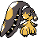

#474
Mawile
SteelFairy
Abilities: Hyper Cutter, Intimidate, Sheer Force
Base stats BST 380
HP50
Attack85
Defense85
Speed50
Sp. Atk55
Sp. Def55
Evolution
None detected.
Level-up learnset
LevelMoveType
Lv. 1AstonishGhost
Lv. 1Tail WhipNormal
Lv. 6VicegripBug
Lv. 11BiteDark
Lv. 16Sweet ScentNormal
Lv. 21Fury CutterBug
Lv. 26Faint AttackDark
Lv. 31Baton PassNormal
Lv. 36CrunchDark
Lv. 41Iron HeadSteel
Lv. 46Play RoughFairy
Lv. 51Swords DanceNormal